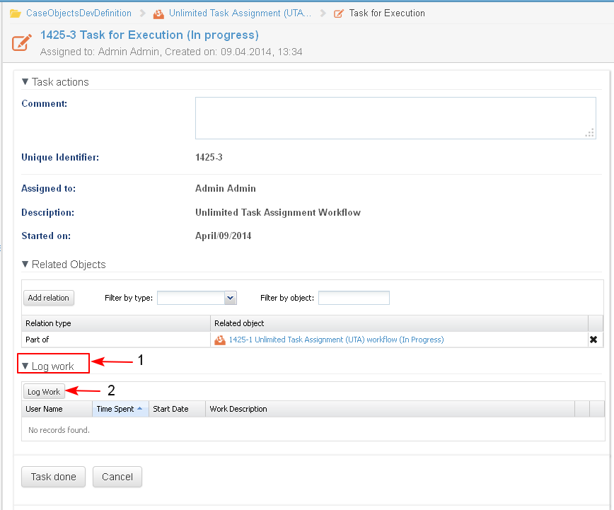
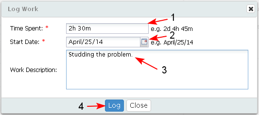
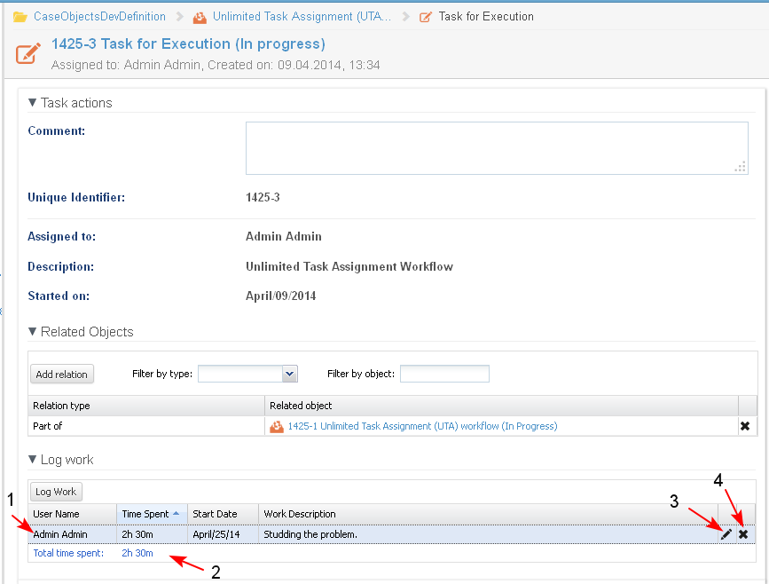

Each user (not only the task assignee), who has at least view permissions on a task, could log work on that task.
In each task, there is a section Log Work (1), where the user could log the time he/she spent working on a task.
The user opens the task and selects the button "Log work" (2).

- The system opens the Log Work screen and the user enters the following details:
- Time Spent (1) - the user should enter the time he/she spent in minutes, hours or days (30m, 2d, 4h, 4h 30 m, 3d 2h 25 m). The field is mandatory.
- Start Date (2) - the user should enter the date on which he started working on the task. The date could be selected from the build in calendar. The field is mandatory.
- Work Description (3) - text field, in which the user enters a brief description of what he/she did. This is an optional field.
When ready, the user clicks the button "Log" (4).

- The system displays the task page.
- The name of the user (1) who has logged time on the task is automatically entered and could not be changed.
- The Total time spent field (2) in the task details is automatically calculated as sum of the logged times on the task for all users who worked on it and could not be changed.
The user could log more than one record of time spent on a task. Many users could log time on the same task.
- There is an option for the user to edit the record (3) of time spent on the task.
- There is an option for the user to delete the record (4) of time spent on the task. The operation needs to be confirmed.
